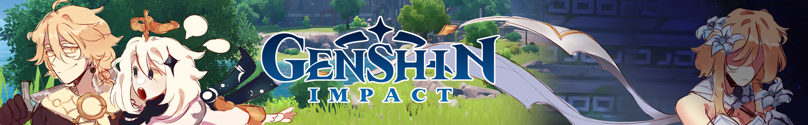

Элегия погибели
Полярная звезда
Охотничья тропа
Небесное крыло
Лук Амоса
Громовой пульс
Аква симулякрум
Черногорский боевой лук
Церемониальный лук
Хищник
Хамаюми
Составной лук
Ржавый лук
Прототип: Полумесяц
Приближённый короля
Охотник во тьме
Ода анемонии
Луна Моун
Королевский лук
Иссушитель
Зелёный лук
Гаснущие сумерки
Вальс Нирваны Ночи
Боевой лук Фавония
Бесструнный
Рогатка
Посыльный
Лук ворона
Клятва стрелка
Изогнутый лук
Лук опытного охотника
Лук охотника
Усмиритель бед
Сияющая жатва
Посох Хомы
Посох алых песков
Покоритель вихря
Нефритовый коршун
Небесная ось
Черногорская пика
Смертельный бой
Режущий волны плавник
Прототип: Звёздный блеск
Пронзающий луну
Пика полумесяца
Крест-копьё Китаин
Королевское копьё
Копьё Фавония
Копьё послания ветров
Копьё Драконьего хребта
Каменное копьё
Гроза драконов
«Улов»
Чёрная кисть
Белая кисть
Алебарда Миллелита
Железный наконечник
Копьё новичка
Харан гэппаку фуцу
Рассекающий туман
Небесный меч
Меч Сокола
Кромсатель пиков
Клятва свободы
Ключ Хадж-нисут
Драгоценный омут
Черногорский длинный меч
Чёрный меч
Церемониальный меч
Стальное жало
Прототип: Злоба
Осквернённое желание
Меч-флейта
Меч Фавония
Меч нисхождения
Меч аристократов
Лунное сияние ксифоса
Легендарный клинок Иссин (сломанный)
Легендарный клинок Иссин (пробуждённый)
Кагоцурубэ Иссин
Киноварное веретено
Драконий рык
Деревянный клинок
Вспышка во тьме
Амэнома Кагэути
Холодное лезвие
Филейный нож
Тёмный железный меч
Предвестник зари
Меч путешественника
Меч небесного всадника
Серебряный меч
Тупой меч
Песнь разбитых сосен
Некованый
Небесное величие
Краснорогий камнеруб
Волчья погибель
Черногорская бритва
Церемониальный двуручный меч
Регалия леса
Прототип: Архаичный
Меч-колокол
Меч драконьей кости
Королевский двуручный меч
Кацурагикири Нагамаса
Каменный меч
Заснеженное звёздное серебро
Дождерез
Двуручный меч Фавония
Благодатный владыка вод
Белая тень
Акуомару
Аквамарин Махайры
Меч из белого железа
Меч драконьей крови
Металлическая тень
Дубина переговоров
Большой меч небесного всадника
Лучший друг наёмника
Двуручный меч богатыря
Сновидения тысячи ночей
Память о пыли
Небесный атлас
Молитва святым ветрам
Истина кагура
Вечное лунное сияние
Черногорский агат
Церемониальные мемуары
Солнечная жемчужина
Скитающаяся звезда
Прототип: Янтарь
Плод восполнения
Плод вечной мерзлоты
Песнь странника
Око сознания
Око клятвы
Морской атлас
Королевский гримуар
Кольцо Хакусин
Кодекс Фавония
Истории Додоко
Вино и песни
Эпос о драконоборцах
Руководство по магии
Потусторонняя история
Парный нефрит
Изумрудный шар
Карманный гримуар
Записи ученика